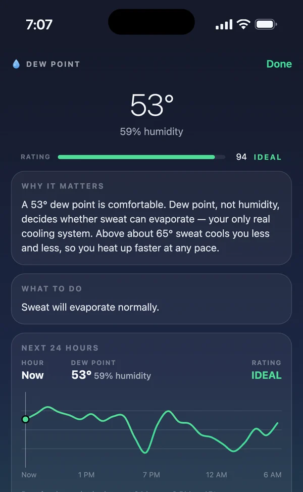
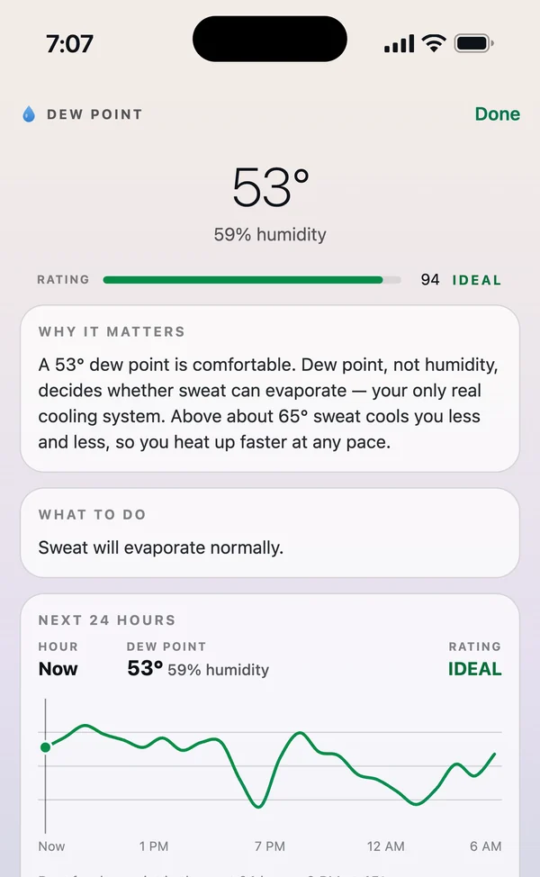
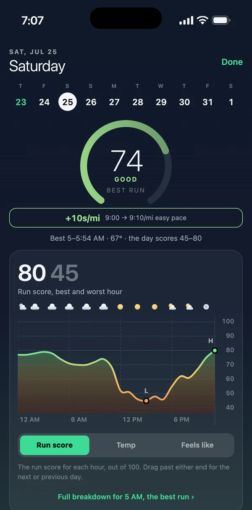
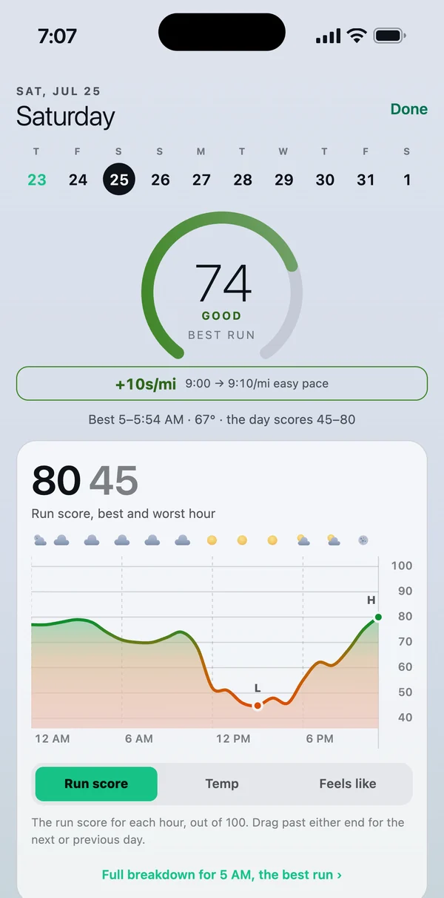
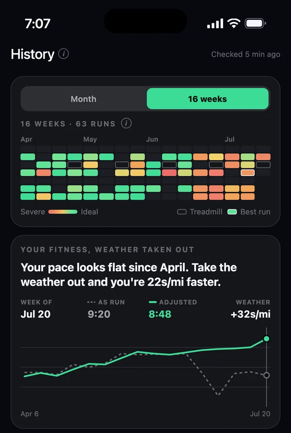
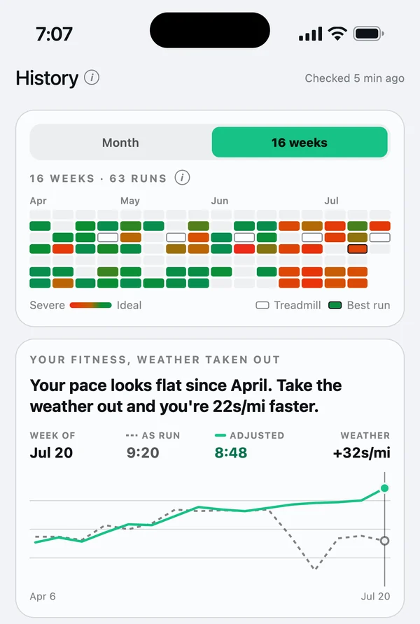

Why not just check the weather?
75° and clear sounds perfect. It isn’t.
Weather app, Tuesday 7 AM
75° and clear. Feels like 81°. Dew point 69°. Wind 4 mph.
Looks like a nice summer morning.
ArcPace, Tuesday 7 AM
48, Moderate. Adds 24 s/mi to your 9:00 easy pace. Singlet, and carry water. Heat flag: yellow.
Next good run time: Thursday 5 AM, 78
Run it easy, or move it.
Depth when you want it
Tap any number to see why.
Every factor gets its own page: what it’s doing to your run, what to do about it, and its next 24 hours. Try one.


10-day run forecast
Long run Saturday? Pick the hour on Tuesday.
Ten days of hourly run scores. Drag across any day to see when it peaks and when it falls apart.


Your run times, on your Home Screen
Tell it when you can run. It watches those hours for you.
Save up to three windows, like before work or after the kids are down. ArcPace finds the best hour in each, today and tomorrow.
After the run
Slow summer? Probably the humidity.
ArcPace takes the weather out of every run, so you see your real fitness. Free, with any watch that saves to Apple Health: Apple Watch, Garmin, COROS. Share any run as a card.


What makes ArcPace different
One score, read in a second
Heat, dew point, wind, rain, sun and altitude in one number out of 100, tuned to your pace.
Depth when you want it
Tap any factor for what it’s doing to your run and what to do about it.
Free, and fast
Everything’s free: no subscription, no account, no ads. It opens straight to your score.
A forecast for every factor
Each factor’s next 24 hours, and run scores hour by hour for the days ahead.
Built around your run times
Save up to three windows. ArcPace finds the best hour in each, today and tomorrow.
Widgets
Your score and best windows on the Home Screen. This hour on the Lock Screen.
No account. No ads.
Your runs stay on your phone.
Only a place and an hour go to the weather service, Apple Weather. No analytics, and no server of ours holding your data.
Questions
Is ArcPace free?
Yes. No ads, no account and no subscription.
What does the run score mean?
Every hour gets a score from 0 to 100 for running: Ideal 93 and up, Great 84–92, Good 66–83, Moderate 46–65, Hard 26–45 and Severe below 26. Thunderstorms and freezing rain cap the score whatever the temperature.
What is the pace cost?
The seconds per mile (or kilometer) the weather adds to your easy pace, compared with an ordinary mild day. It counts temperature, dew point, sun, wind, rain and altitude, scaled to your own pace. A cool, dry day comes back negative: you'll run faster for the same effort.
Which watches work with it?
Any watch or app that saves your runs to Apple Health. Apple Watch also saves the route and heart rate. Many others, such as Garmin and COROS, don't save a route, so you tell ArcPace where you usually run and when you travel, and those runs are marked as approximate.
Is there an Android or web version?
Not yet. ArcPace is for iPhone, on iOS 17 or later. On the web, the free running weather calculator scores any weather for your pace.
What data does ArcPace collect?
None. Your runs are read from Apple Health and stay on your phone. Your location goes only to the weather service, Apple Weather. Privacy policy.
How do I get in touch?
Email support@arcpace.app, or use Send feedback in the app's Settings.
More on running in the weather: how to run in the heat, heat illness warning signs, how heat and humidity slow your pace, what to wear by temperature and WBGT heat flags.
What’s your run score right now?
Free for iPhone. No account, no ads.
No iPhone? Try the running weather calculator.